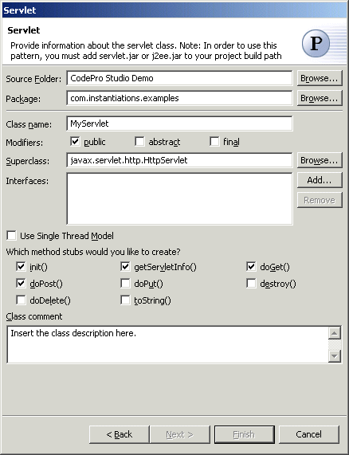

Servlet Pattern
This is a feature that is only available under Eclipse (Application Developer includes a built-in Servlet wizard).
The  Servlet Pattern creates an Servlet subclassed from
javax.servlet.http.HttpServlet.
Servlet Pattern creates an Servlet subclassed from
javax.servlet.http.HttpServlet.

| Option | Description | Default |
| Source folder | Enter a source folder for the new class. Either type a valid source folder path or click Browse to select a source folder via a dialog. | The source folder of the element that was selected when the wizard was started. |
| Package | Enter a package to contain the new class. Either type a valid package name or click Browse to select a package via a dialog. | The package of the element that was selected when the wizard has been started. |
| Class name | Enter a name for the new servlet class. | <MyServlet> |
| Modifiers | Select one or more access modifiers for the new
class:
|
public |
| Superclass | Type or click Browse to select a superclass for this class. | <javax.servlet.http.HttpServlet> |
| Interfaces | Click Add to choose interfaces that the servlet should implement. | <blank> |
| Use Single Thread Model | Specify whether the servlet you create implements the SingleThreadModel interface. This guarantees that there will not be simultaneous access to the same servlet instance, which has a tendency to stabilize thread execution ordering | <false> |
| init() | Determines whether an init() method is generated | <true> |
| doServletInfo() | Determines whether a doServletInfo() method is generated | <true> |
| doGet() | Determines whether a doGet() method is generated | <true> |
| doPost() | Determines whether a doPost() method is generated | <true> |
| doPut() | Determines whether a doPut() method is generated | <false> |
| destroy() | Determines whether a destroy() method is generated | <false> |
| doDelete() | Determines whether a doDelete() method is generated | <false> |
| toString() | Determines whether a toString() method is generated | <false> |
| Class comment | Enter the description of the application | <blank> |